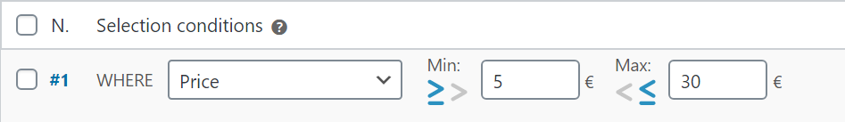
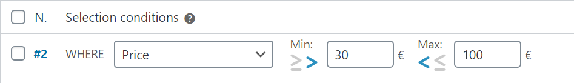

Lähetyssääntöjen 15 ehdollista valintamenetelmää
Fish and Ships WooCommersin mukana tulee laaja valikoima valintamenetelmiä , nämä ovat:
Hinta: |
Tuotteen hinta otetaan ennen veroja . Jos alennushinta on olemassa, otetaan se huomioon. |
Paino: |
Jos tuotteille ei ole asetettu painoa, otetaan 0. |
Tilavuus: |
Otettu arvo on kertolasku Leveys x Korkeus x Pituus. Jos kokoa ei ole asetettu, otetaan 0. |
Ostoskorin kohteet: |
Tuotteen määrä ostoskorissa otetaan huomioon. Huomaa, että ryhmittelyperusteet voivat olla hämmentäviä! Jos valitset ryhmittymättömän, tuotteet otetaan yksi kerrallaan, ja määrä tulee aina 1 (katso ryhmittäin). |
Minimitat, |
Jokainen näistä ottaa huomioon tuotteiden pienen, (Min.) keskisuuren (Mid.) ja suuren (Maks.) mittasuhteen. Ei ole väliä onko koot syötetty pienestä suureen vai suuresta pieneen, tuotteen jonka suuruus on: 10x15x1 tai 15x1x10, koko on aina 15, keskimmäinen 10 ja pieni 1. Tämä menetelmä ottaa aina tuotteet yksitellen valitusta ryhmittelymenetelmästä riippumatta. Jos tuotteelle ei ole asetettu kokoa, otetaan arvo 0. |
Pituus + leveys + korkeus [PRO]: |
Otettu arvo on ulottuvuuksien summa. Tuotteessa, jonka koko on 10x15x1, se on: 10+15+1 = 26. Tämä menetelmä ottaa aina tuotteet yksitellen valitusta ryhmittelymenetelmästä riippumatta. Jos tuotteelle ei ole asetettu kokoa, otetaan arvo 0. |
User role [PRO]: |
Get more info here. |
Suurempi / Suurempi tai yhtä suuri kuin & Pienempi / Pienempi tai yhtä suuri kuin
Menetelmät: mitat, paino, määrä, hinta ja tuotteiden lukumäärä ostoskorissa näyttävät pienimmän ja enimmäisarvon kentät.
Kaikkien näiden ehtojen mukaan voit valita, kuinka MIN- ja MAKS-arvoja verrataan, siirtämällä jokaisen säännön sopivaan symboliin tarpeen mukaan.
Seuraavassa taulukossa MIN-vertailu on asetettu SUUREMPI TAI YHTÄ SUURI KUIN 5 € ja MAX-vertailuksi PIENEMPI TAI YHTÄ SUURI KUIN 30 €

| 4.99€ | 5.00€ | 30.00€ | 30.01€ |
Toisessa taulukossa MIN-vertailu asetetaan SUUREMPI KUIN 30€, ja MAX-vertailu PIENEMPI KUIN 100 €, on: tasavertaiset arvot ei vastaa tätä sääntöä:

| 30.00€ | 30.01€ | 99.99€ | 100.00€ |
Huomaa, että 30,00 € vastaa sääntöä 1, koska MAX-kenttävertailu on PIENEMPI TAI YHTÄ SUURI KUIN, eikä vastaa sääntöä 2, koska MIN tekee vertailun kanssa SUUREMPI KUIN .
Toisaalta 100 € ei vastaa sääntöä nro 2, koska MAX-kentän vertailu on PIENEMPI KUIN.
Sisältyy kategoriaan, |
Valitut luokat otetaan huomioon mutta ei lapsiobjekteja. Lapsiobjektit tulisi sisällyttää, jos haluat, että ne kuuluvat valintamenetelmään. |
Merkitty nimellä, |
Tuotteen nimi (tag) käytetään. |
Toimitusluokassa, |
Toimitusluokka käytetään. |
Tilavuus [PRO]: |
Tilavuuspainolle tehdään kaksi laskutoimitusta: painon ja tilavuuden mukaan, korkein arvo otetaan. Kun valitset tilavuuspainon, sääntötaulukon alle ilmestyy uusi kenttä, jotta voit syöttää tilavuuspainokertoimen , jonka saat postitus- ja lähetyspalvelun tarjoaltasi: |
Kuinka tämä toimii? Sanotaan vaikka tilavuuspainokertoimeksi 50 kg / metri3. Myymälämme esimerkki on määritetty toimimaan senttimetreinä ja grammoina, muunnettuna, is: 0,05 grammaa kuutiosenttimetriä kohden, (täältä löytyy tilavuusmuunnin tilavuudelle / painolle):
| Tuote | Paino | Koko | Tilavuus | Tilavuuspaino | Otettu arvo |
|---|---|---|---|---|---|
| Takki | 1500 g. | 50x50x14 cm | 35000 cm3 | 35000 * 0.05 = 1750 g. |
1750 g. |
| Kannettava tietokone | 2500 g. | 40x46x18 cm | 33120 cm3 | 33120 * 0.05 = 1656 g. |
2500 g. |
Kevyiden tuotteiden osalta otettu arvo on laskettu tilavuuspaino. Raskaissa tuotteissa otetaan painoarvo. Aina korkein arvo.
Ja...nyt?
Näimme juuri valintamenetelmät. Nyt, oppimalla, miten lähetyskustannukset toimivat, voimme käyttää niitä Fish and Shipsin perustoiminnoissa: